The Humanity colection
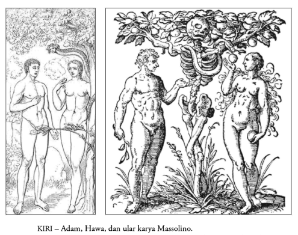
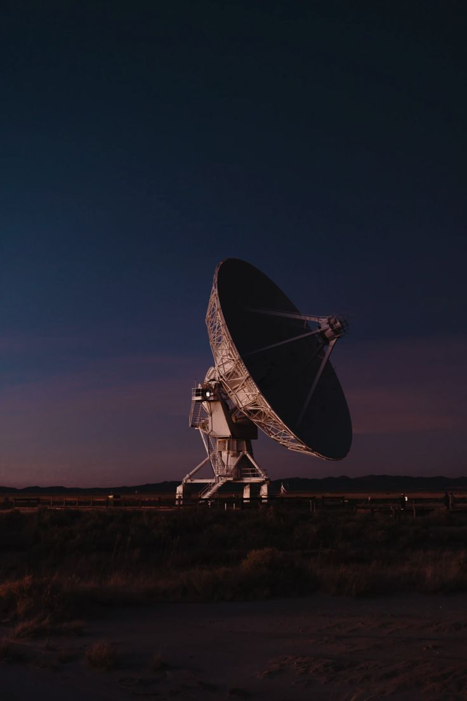
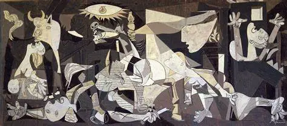
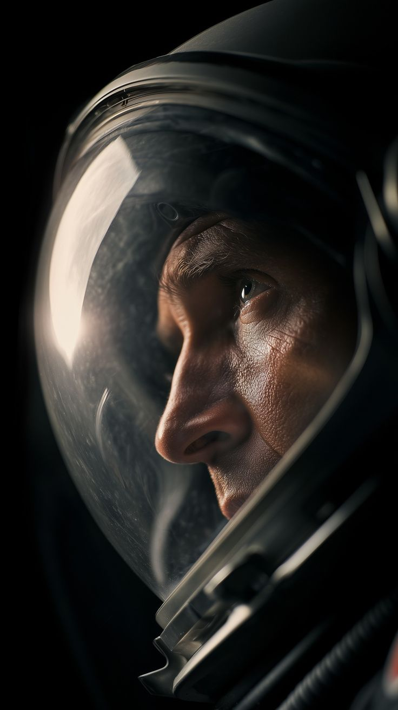
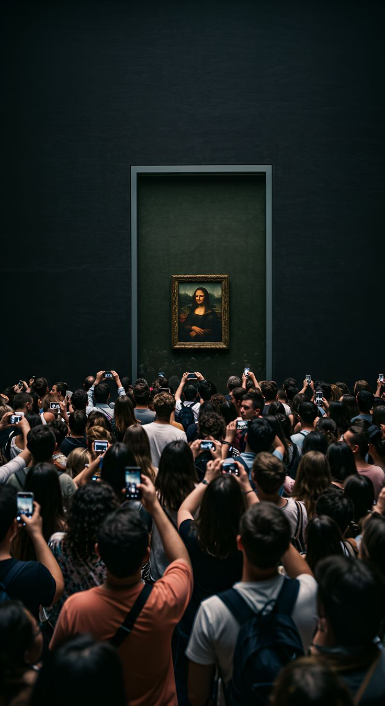
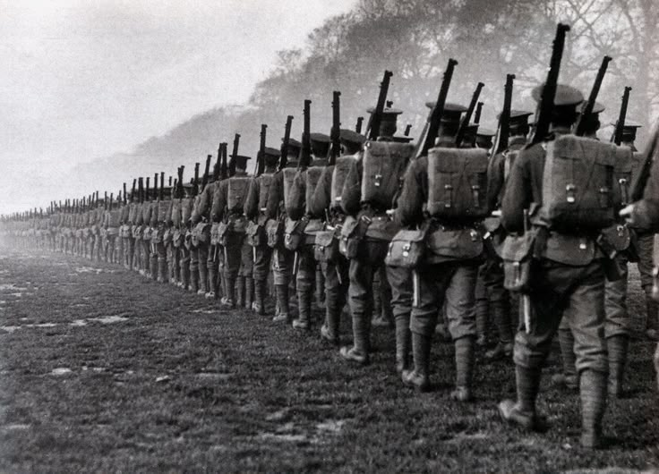
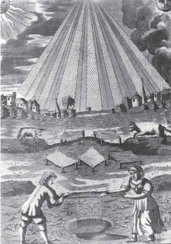


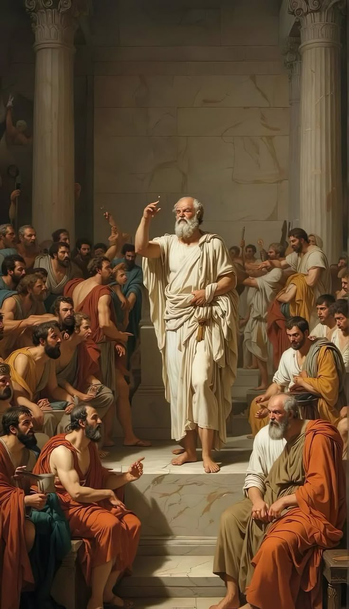
We call our self as the greater creatures from the god, and claim a heaven as a reward of being kindness. But if we do the opposite, the hell is the reward.
Human evolution is not an epic tale of primitive creatures evolving into wise guardians of the universe. Instead, our evolution is a terrifying biological design a curse where our very intelligence has evolved purely as a weapon of mass destruction against our own planet.









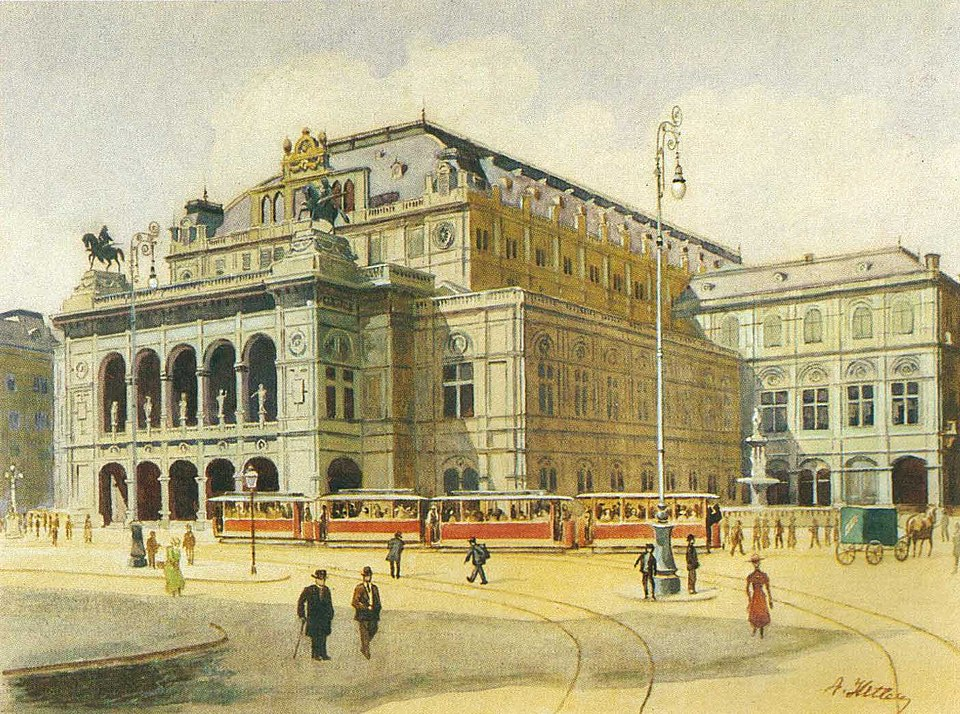
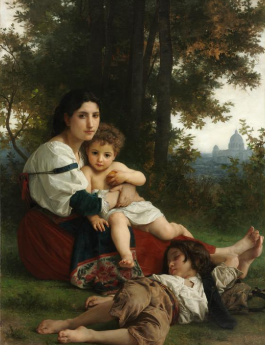


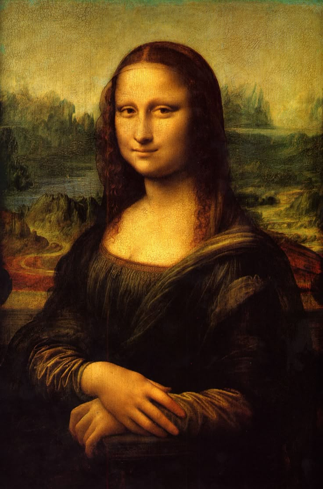
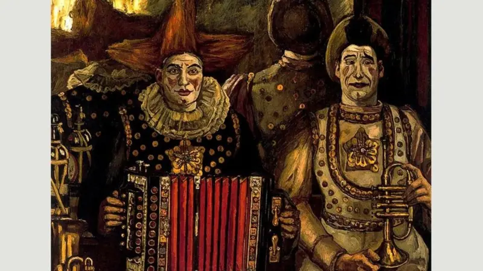
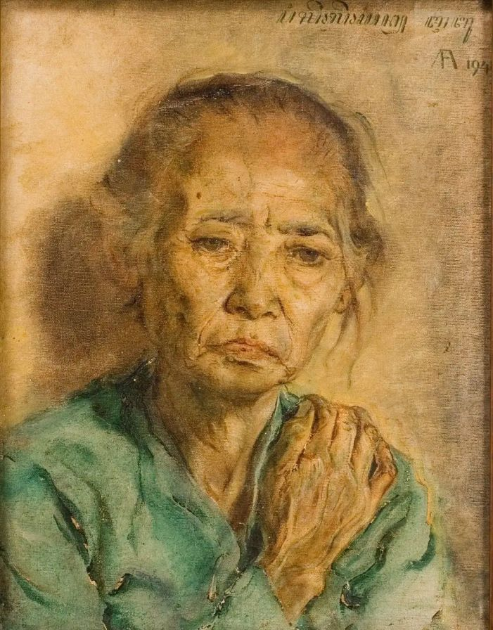

The feeling of having no power over people and events is generally unbearable to us — when we feel helpless we feel miserable. No one wants less power; everyone wants more.
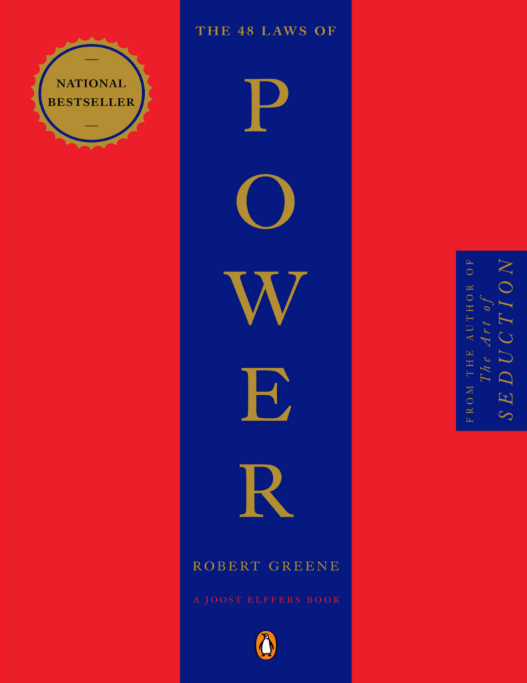
The feeling of having no power over people and events is generally unbearable to us—when we feel helpless we feel miserable. No one wants less power; everyone wants more. In the world today, however, it is dangerous to seem too power hungry, to be overt with your power moves. We have to seem fair and decent.
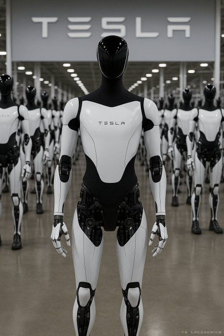
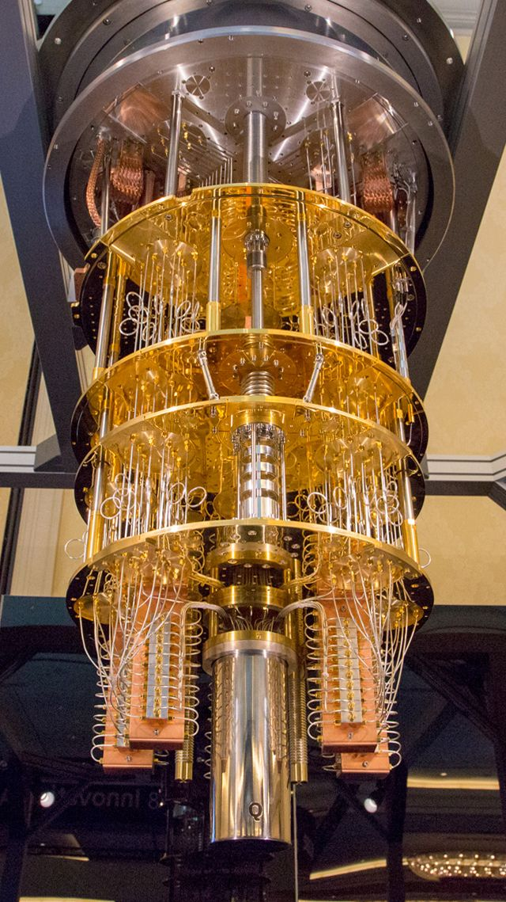
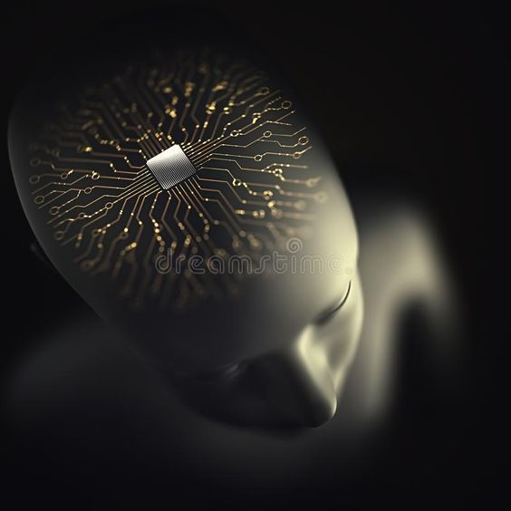
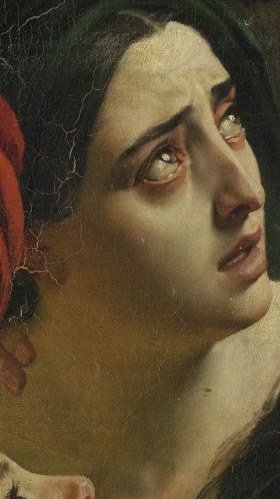
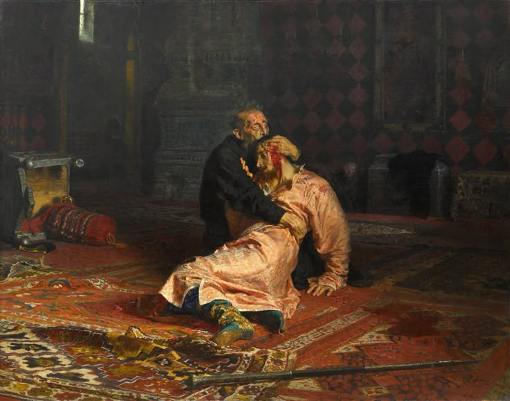
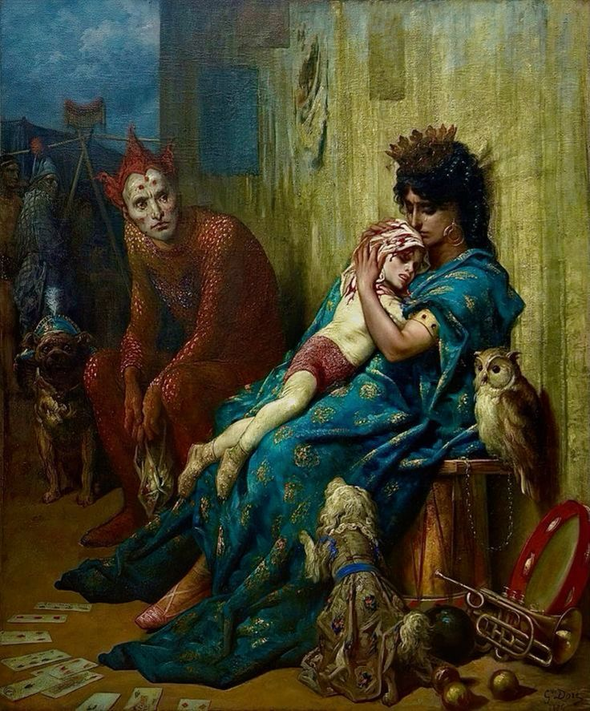
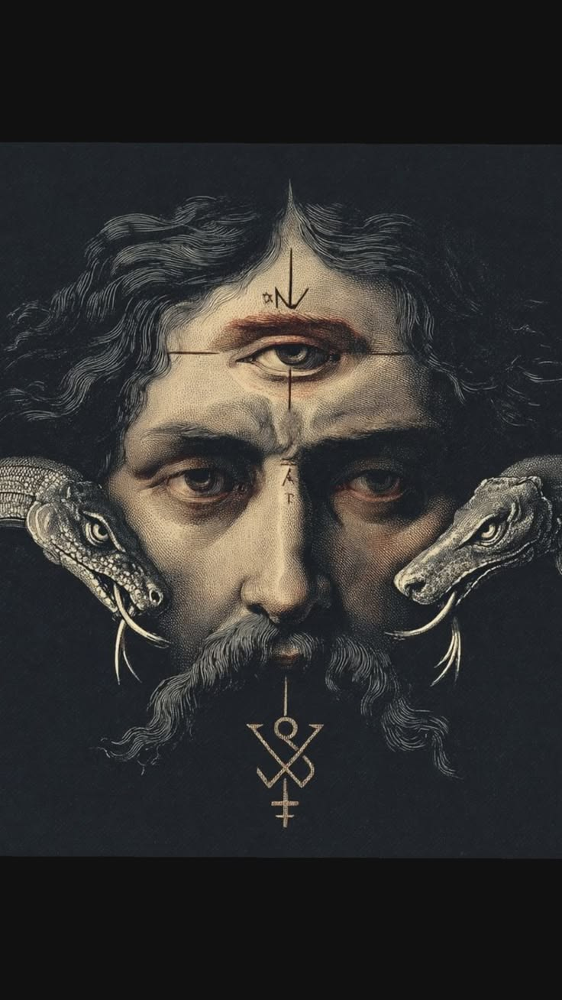
Art is not merely a combination of pigment on canvas, chiseled stone, or structured sound. It is a peculiar alchemy—the deliberate translation of the unseen human spirit into the physical realm. It is the language we use when words fail to capture the vastness of the human experience.
Every deliberate brushstroke, every carved line, and every composed chord holds a secret. When humans create art, they are reaching into a dark, boundless internal void, pulling out fragments of their consciousness, and trapping them in matter.
Why do mortals create? Perhaps it is an act of desperate rebellion. Knowing that their existence is brief, they forge these artifacts to outlive their own heartbeat. A painted eye continues to watch centuries after the artist's own eyes have closed. A melody echoes long after the breath that carried it has returned to the wind.
The human compulsion to create is not merely a cultural habit; it is an evolutionary phantom limb. From the crushed red ochre blown over a hand against a cold, dark Paleolithic cave wall, to the glowing, infinite realms of digital media, the skin of the art mutates, but the ancient pulse beneath it remains unchanged.
Within the machine, invisible entities of shape and color are forced to mate, mutate, and inherit the mathematical traits of their parents. The bizarre and the unfit are mercilessly culled into the void. Only the visually captivating are permitted to survive and breed the next generation.
Not aviliable for github hehe
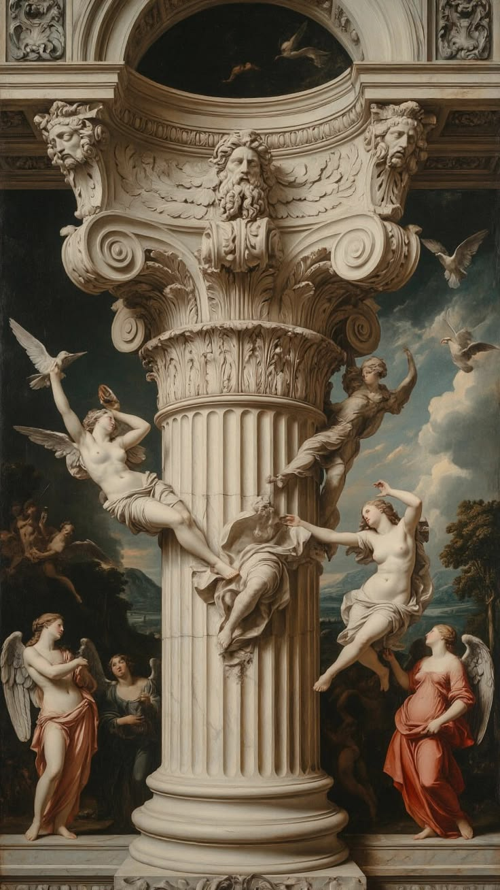